Тема занятия – создание механизма регистрации новых пользователей.
В рамках этого занятия нам предстоит выполнить 3 задачи:
Если пользователь заходит в игру не под своим аккаунтом и не под аккаунтом администратора, то ему необходимо зарегистрироваться. Для этого потребуется создать форму для регистрации новых пользователей, в которой игрок будет указывать свой логин. После ввода логина система перезапустится, и в списке пользователей появится новый игрок.
В рамках первой задачи добавим новую общую форму, которую назовем "ФормаРегистрации" и нажмем "Готово" (рис. 17.1).
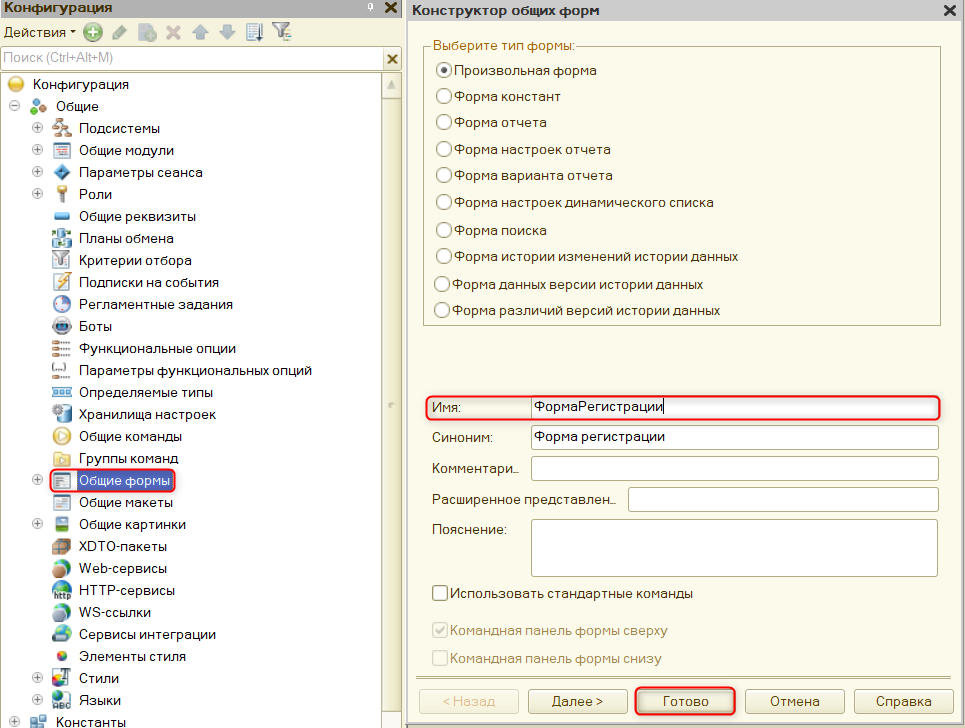
Рис. 17.1. Добавление общей формы
В форме регистрации необходимо создать два поля: "Имя" и "Логин". Создадим для них реквизиты с соответствующими названиями и с типом данных "строка" (рис. 17.2 – 17.3).
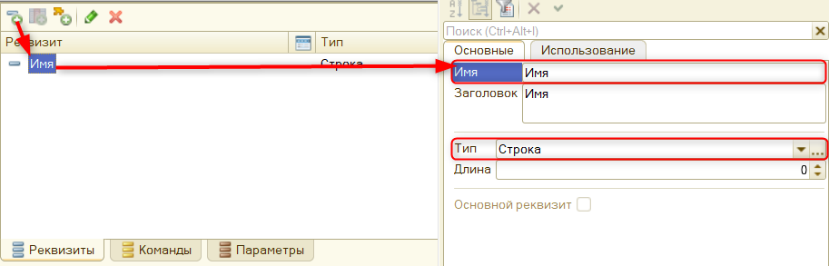
Рис. 17.2. Добавление реквизита "Имя"
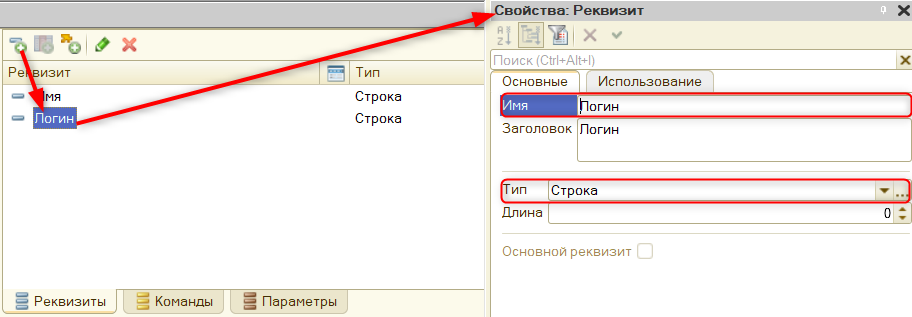
Рис. 17.3. Добавление реквизита "Логин"
Добавим эти реквизиты на форму (рис. 17.4).
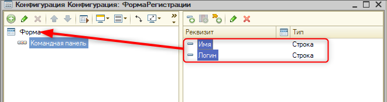
Рис. 17.4. Добавление реквизитов на форму
Данные поля будут отображаться без заголовка. Для этого выделим оба элемента и у свойства "ПоложениеЗаголовка" укажем значение "Нет" (рис. 17.5).
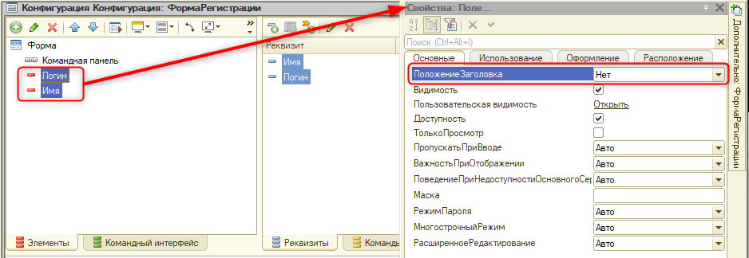
Рис. 17.5. Изменение положения заголовка
Вместо заголовков в каждом поле будет отображаться подсказка ввода. Сделаем данную настройку для поля "Логин". В палитре свойств перейдем на вкладку "Использование" и в поле "ПодсказкаВвода" напишем "Придумайте логин". Также укажем, что "ОтображениеПодсказки" будет "Всплавающая", а сама подсказка будет содержать текст "Логин игрока" (рис. 17.6).
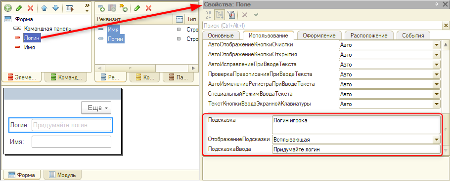
Рис. 17.6. Настройка подсказки для поля "Логин"
Аналогичную настройку выполним для элемента "Имя". В качестве подсказки ввода укажем текст "Укажите имя", "Отображение подсказки" – "Всплывающая", "Подсказка" – "Имя игрока" (рис. 17.7).
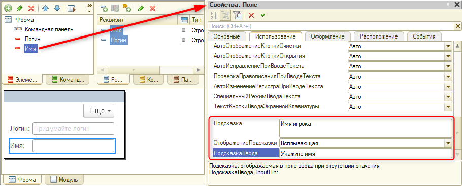
Рис. 17.7. Настройка подсказки для поля "Имя"
Чтобы пользователь понимал, что за форма перед ним открылась, добавим декорацию надписи с текстом "Добро пожаловать! Зарегистрируйтесь для начала игры!".
Добавим новый элемент на форму. Тип элемента – "Декорация – надпись" (рис. 17.8).
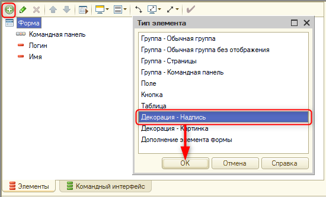
Рис. 17.8. Добавление декорации на форму
Переместим декорацию в верхнюю часть формы, а также укажем для нее имя – "ШапкаФормы" (рис. 17.9).
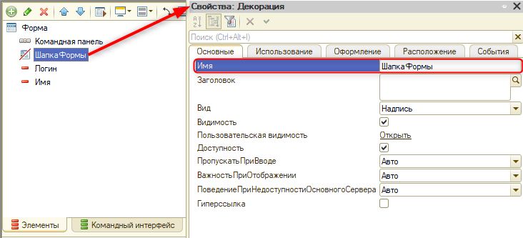
Рис. 17.9. Изменение имени декорации
Заголовок сформируем через кнопку "Открыть". Вид заголовка – форматированная строка. Текст заголовка – "Добро пожаловать! Зарегистрируйтесь для начала игры!". Также можно поэкспериментировать с размером текста (рис. 17.10).
Рис. 17.10. Заголовок декорации
Далее необходимо расположить декорацию по центру, чтобы форма выглядела симпатичнее. Перейдем на вкладку "Расположение" и укажем в свойстве "ГоризонтальноеПоложение" – "Центр" (рис. 17.11).
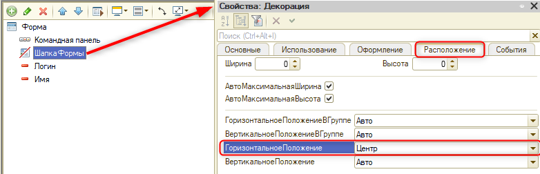
Рис. 17.11. Изменение положения декорации
Осталось добавить кнопку "Зарегистрироваться". Для этого добавим команду на форму (рис. 17.12).
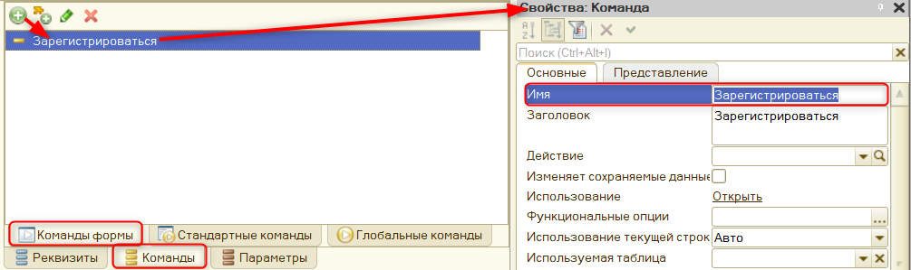
Рис. 17.12. Добавление команды формы
Перенесем команду на форму (рис. 17.13).
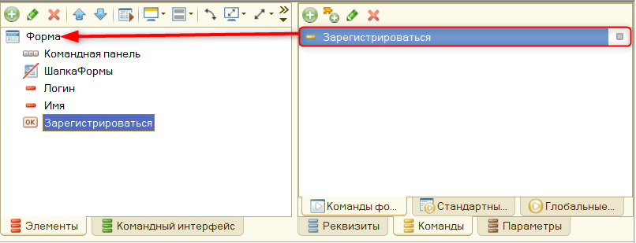
Рис. 17.13. Добавление команды на форму
В палитре свойств укажем, что это – кнопка по умолчанию, перейдем на вкладку "Расположение" (рис. 17.14).
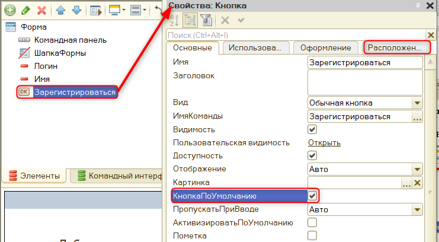
Рис. 17.14. Настройка кнопки
Изменим параметр "ГоризонтальноеПоложениеВГруппе" на "Центр" (рис. 17.15).
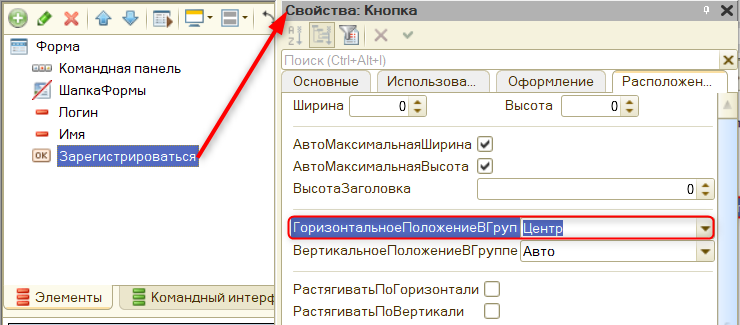
Рис. 17.15. Настройка кнопки
Перейдем ко второй задаче. Теперь необходимо настроить программную логику данной кнопки. Для этого выберем команду "Зарегистрироваться" и в палитре свойств нажмем на кнопку выбора у параметра "Действие". Выбираем "Создать на клиенте" (рис. 17.16).
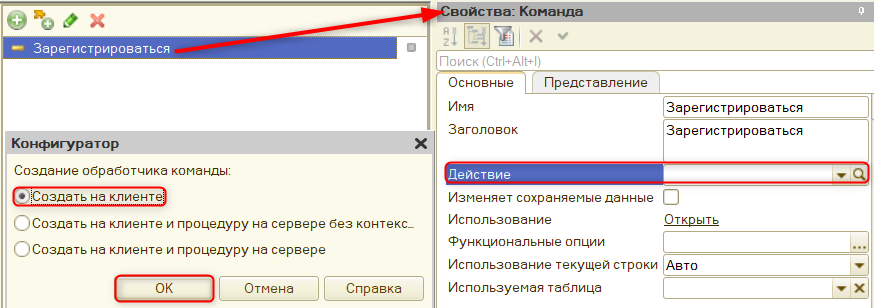
Рис. 17.16. Добавление действия команды
В процессе регистрации система считает с формы имя и логин пользователя, создаст нового пользователя и добавит запись в справочник "Игроки". Для подобной реализации необходимо перейти на контекст сервера, но для начала необходимо проверить, ввел ли игрок логин и имя в форме регистрации.
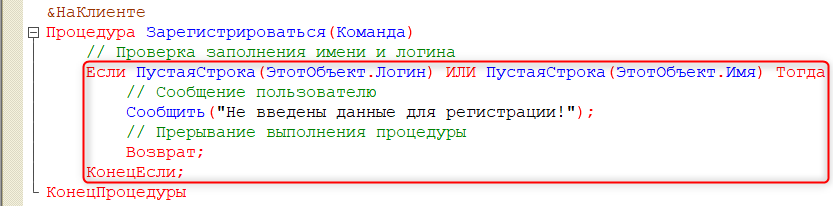
Теперь можем перейти на контекст сервера. Для этого вызовем процедуру "ЗарегистрироватьсяНаСервере", которую создадим позже.
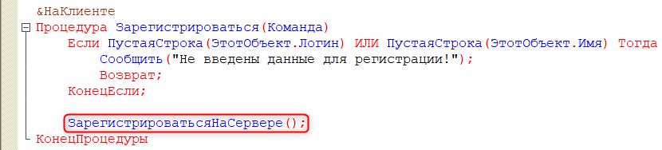
После создания нового пользователя и записи в справочнике "Игроки" необходимо перезапустить пользовательский режим, чтобы пользователь мог зайти в только что зарегистрированный аккаунт. Воспользуемся методом "ЗавершитьРаботуСистемы", пропустим первый параметр данного метода и укажем значение второго параметра "Истина", с помощью третьего параметра укажем пользователю, что ему необходимо войти в систему.
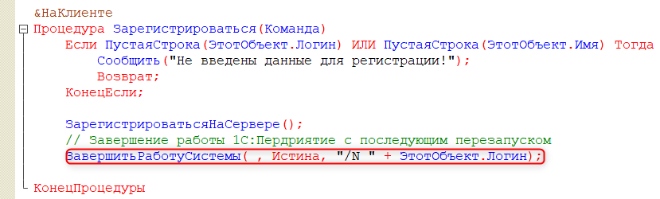
Теперь определим процедуру "ЗарегистрироватьсяНаСервере".
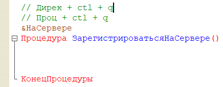
Процесс регистрации не должен зависеть от прав текущего пользователя. Для регистрации будет создан технический пользователь "Новая игра", у которого не будет прав на внесение изменений в систему. Установим привилегированный режим в положение "Истина", чтобы система не проверяла права текущего пользователя.
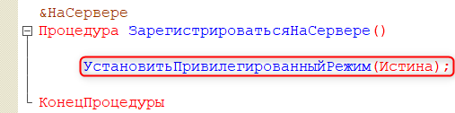
Создадим пользователя при помощи логина и пароля из формы, а затем выключим привилегированный режим.
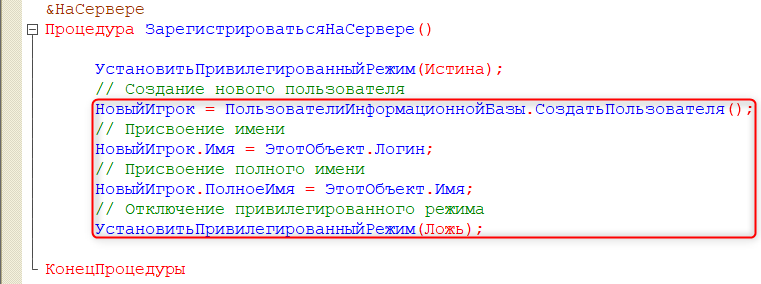
После того, как пользователь был создан, необходимо наделить его правами.
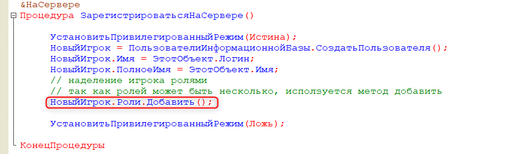
Теперь нужно обратиться к ролям, чтобы наделить пользователя правами, но здесь есть особенность. Роль – это частица режима пользователя, поскольку именно там пребывают все полномочия, которые может и не может использовать игрок. Чтобы обратиться к роли, нужно обратиться к альтернативной структуре конфигурации. Их всего две: режим разработчика и режим пользователя. Роль, которая была создана в режиме разработчика, также появляется в структуре базы данных. И для того, чтобы обратиться к ней именно со стороны базы данных, необходимо использовать ключевое слово "Метаданные".
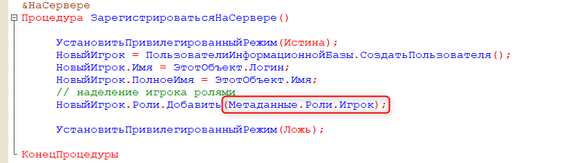
Также реализуем настройку, чтобы созданный пользователь не отображался в окне авторизации. В таком случае игрок сможет войти в систему, только зная логин для авторизации. Установим свойство "ПоказыватьВСпискеВыбора" в положение "Ложь" до отключения привилегированного режима.
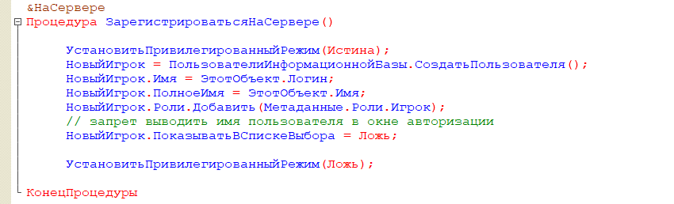
Последний шаг, который нужно выполнить, – это запись нового пользователя в систему. Укажем соответствующую строчку до отключения привилегированного режима.
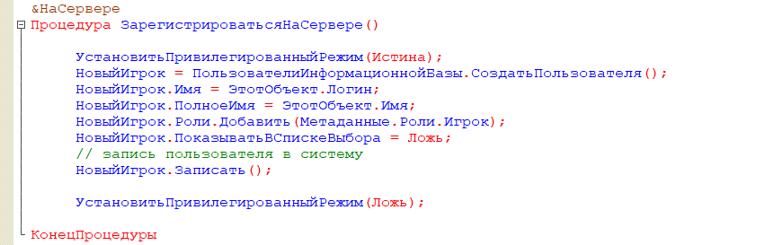
Помимо автоматического создания пользователя также необходимо программно создавать запись в справочнике "Игроки" с информацией об этом пользователе.
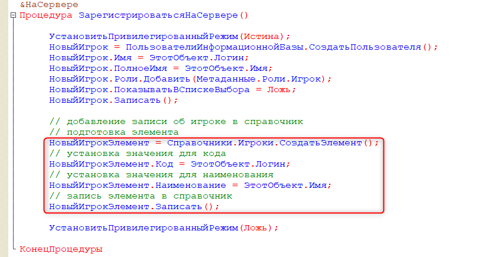
Игроку, который зарегистрировался в системе, необходимо выдать стартовый капитал для начала игры.
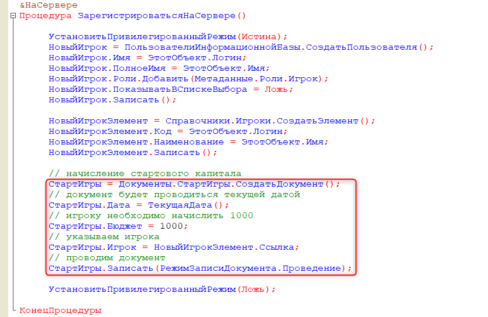
Форму регистрации необходимо отобразить на начальном экране, но видеть ее будет только технический пользователь, который будет называться "Новая игра".
Перед созданием такого пользователя создадим соответствующую роль. Имя роли – "НоваяИгра" (рис. 17.17).
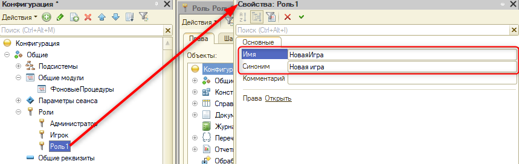
Рис. 17.17. Добавление новой роли
Эта роль будет включать в себя только право на просмотр общей формы "ФормаРегистрации" (рис. 17.18).
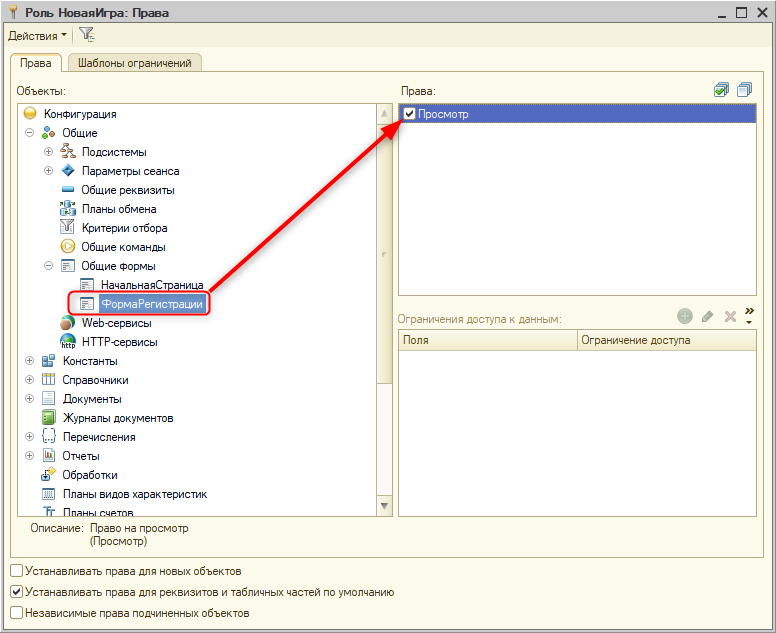
Рис. 17.18. Настройка прав для роли "НоваяИгра"
Обновим конфигурацию базы данных, чтобы сохранить все внесенные изменения.
Перейдем к третьей задаче. Теперь можно вынести форму регистрации на начальный экран и сделать настройку: если игру запустил технический пользователь для регистрации, то будет выводиться форма регистрации, если же в систему вошел реальный игрок, то должна отображаться форма начальной страницы.
Откроем рабочую область начальной страницы, чтобы сделать такую настройку (рис. 17.19).
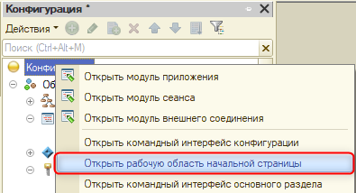
Рис. 17.19. Переход к рабочей области начальной страницы
Добавим форму регистрации на начальный экран (рис. 17.20).
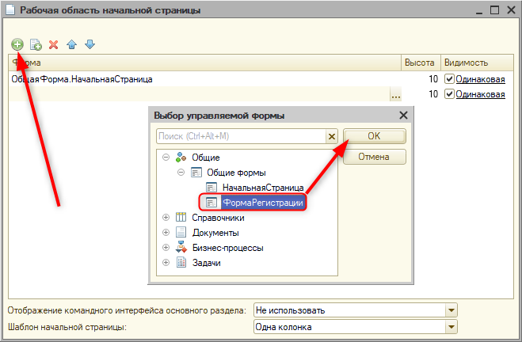
Рис. 17.20. Добавление формы регистрации на начальный экран
Чтобы разделить отображение форм по пользователям, необходимо изменить видимость.
Форма регистрации должна выводиться только для пользователя с ролью "НоваяИгра" (рис. 17.21). "НачальнаяСтраница", напротив, должна быть видна всем, кроме пользователей с ролью "НоваяИгра" (рис. 17.22).
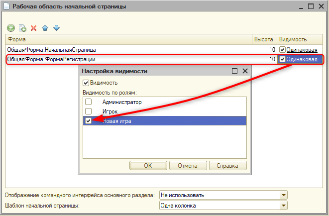 |
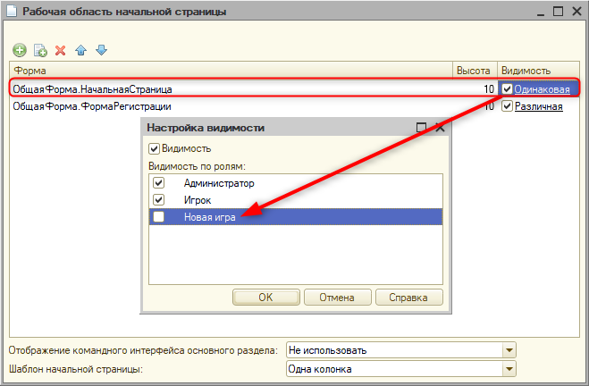 |
Рис. 17.21. Настройка видимости формы регистрации |
Рис. 17.22. Настройка видимости формы "НачальнаяСтраница" |
Следующий шаг – создание технического пользователя. Нажмем на вкладку "Администрирование" и откроем список пользователей (рис. 17.23).
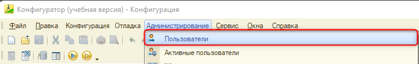
Рис. 17.23. Переход к списку пользователей
Здесь уже есть пользователь "Тест". Изменим его имя и полное имя на "НоваяИгра" (рис. 17.24). Перейдем на вкладку "Прочее" и укажем, что данный пользователь будет наделен ролью "НоваяИгра" (рис. 17.25).
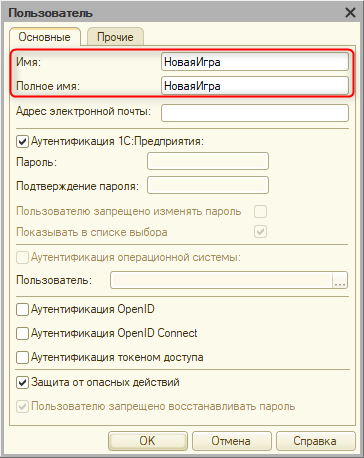 |
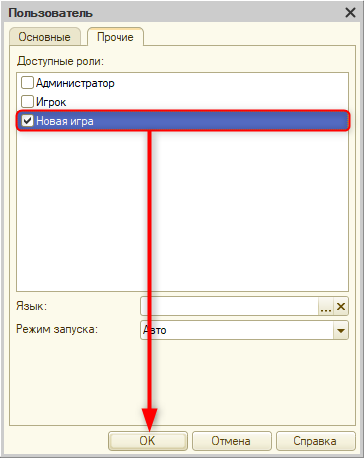 |
Рис. 17.24. Изменение пользователя "Тест" |
Рис. 17.25. Изменение роли пользователя "НоваяИгра" |
Таким образом, в системе будет два заранее заготовленных пользователя: "Администратор" и "Новая игра".
Чтобы при запуске из конфигуратора можно было каждый раз выбирать пользователя, под которым нужно войти в систему, необходимо обратиться к вкладке "Сервис" и открыть "Параметры" (рис. 17.26).
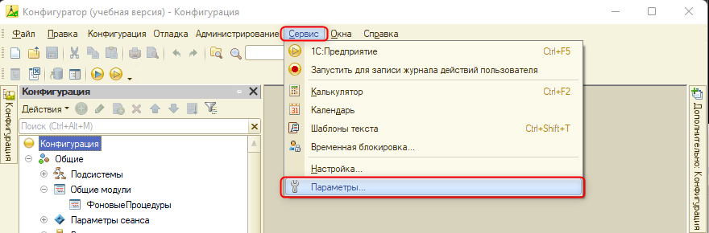
Рис. 17.26. Переход к параметрам
В открывшемся окне переходим на вкладку "Запуск "1С:Предприятия" и в пункте "Пользователи" указываем "Имя" (рис. 17.27).
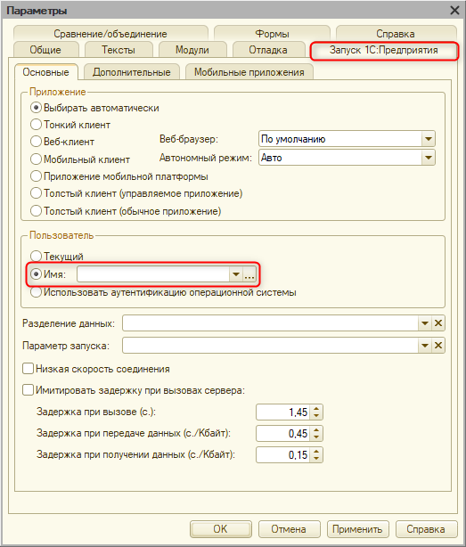
Рис. 17.27. Настройка запуска программы
Если в данном поле не указать конкретного пользователя, то система каждый раз будет спрашивать, под кем зайти в систему.
Обновим конфигурацию базы данных и запустим пользовательский режим под пользователем "НоваяИгра".
В результате открылась форма регистрации. Но сейчас все элементы формы находятся в левом верхнем углу, что выглядит не очень красиво (рис. 17.28).
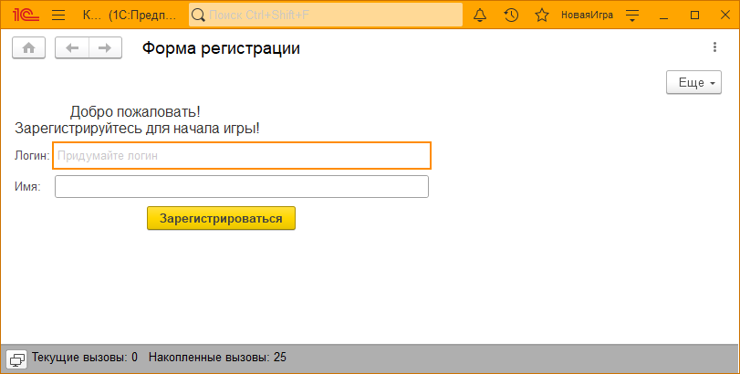
Рис. 17.28. Запуск игры под пользователем "НоваяИгра"
Закроем пользовательский режим и вернемся в конфигуратор.
Откроем общую форму "ФормаРегистрации" и в свойствах всей формы на вкладке "Расположение" укажем для свойств "ГоризонтальноеПоложениеПодчиненных" и "ВертикальноеПоложениеПодчиненных" значения "Центр" (рис. 17.29).
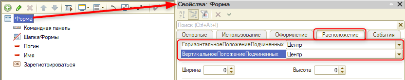
Рис. 17.29. Настройка положения подчиненных элементов на форме регистрации
Обновим конфигурацию базы данных и запустим пользовательский режим под пользователем "НоваяИгра".
Зарегистрируем нового пользователя. Логин и имя можно указать на свое усмотрение (рис. 17.30).
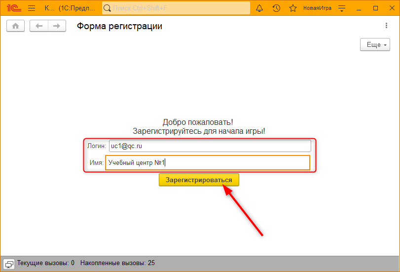
Рис. 17.30. Регистрация нового пользователя
|
Если ввести логин уже существующего пользователя, система выдаст ошибку. |
После нажатия на кнопку "Зарегистрироваться" программа перезапустится, и откроется пользовательский режим только что созданного игрока (рис. 17.31).
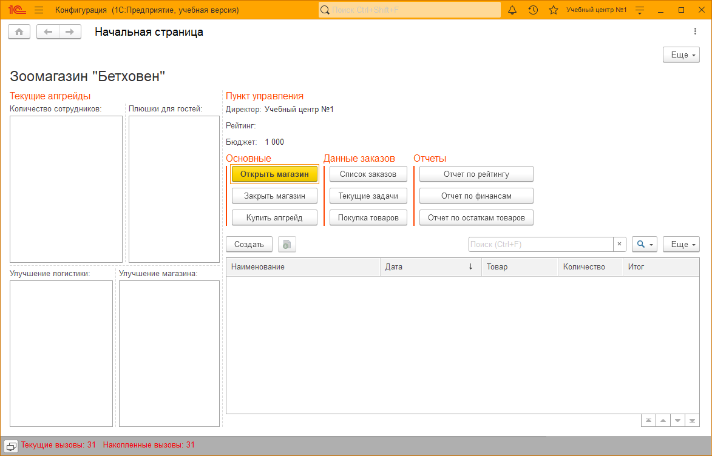
Рис. 17.31. Начальная страница нового игрока
Можно начать игру, покупать товары или апгрейды и продавать их покупателю!
Если сейчас перезапустить систему, то вновь придется выбрать пользователя, но так как при создании пользователя было указано, что он не должен отображаться в списке, его логин потребуется ввести вручную (рис. 17.32).
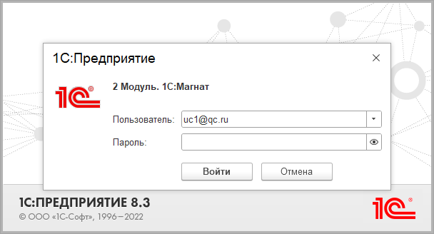
Рис. 17.32. Авторизация в системе
Если какой-то пользователь был создан случайно, либо просто требуется удалить одного из пользователей, необходимо вновь обратиться к вкладке "Администрирование" и открыть список пользователей.
Чтобы удалить пользователя, необходимо сфокусироваться на его записи и нажать на крестик (рис. 17.33).
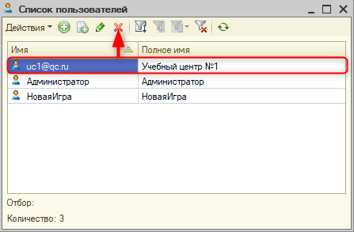
Рис. 17.33. Удаление пользователя
Если пользователь был удален из системы, то его также необходимо удалить и в пользовательском режиме в справочнике "Игроки". Для этого необходимо запустить игру под пользователем "Администратор" и, выбрав справочник "Игроки" в разделе "Для администратора", удалить лишнюю запись через "Еще" – "Удалить". Или можно использовать сочетание клавиш Shift+Del (рис. 17.34).
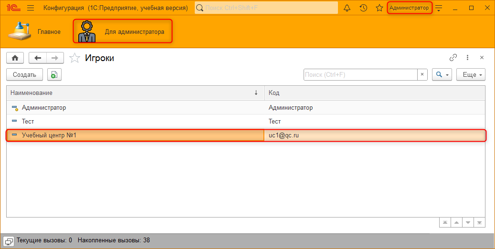
Рис. 17.34. Список пользователей
Последнее, что осталось сделать в этой программе, – это настроить списки. На начальном экране есть кнопки для быстрого перехода к списку заказов, этапам заказов, а также к покупкам товаров. Сейчас в них отображаются все записи по всем игрокам. Было бы удобнее, если бы каждый игрок видел только свой список.
Закроем пользовательский режим и вернемся в конфигуратор.
Данную настройку можно будет реализовать с помощью реквизита "Игрок". Текущая задача сводится к тому, чтобы создать для документов, к которым игрок имеет доступ, формы списка и сделать в них отбор данных по текущему игроку.
Начнем с документа "Покупка товаров". Откроем окно редактирования этого документа и на вкладке "Формы" добавим новую форму списка. Чтобы сразу определить структуру списка, нажмем на кнопку "Далее" (рис. 17.35).
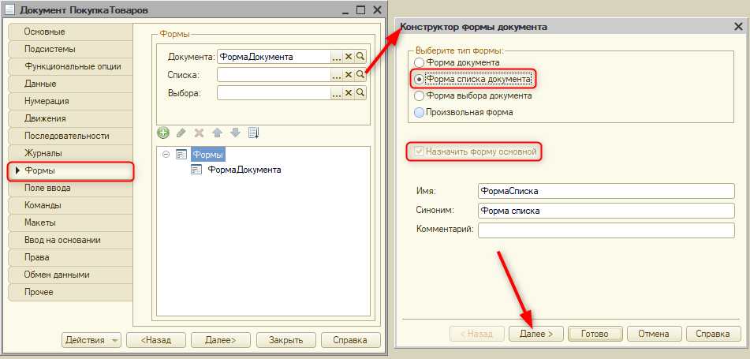
Рис. 17.35. Добавление формы списка
На форме списка необходимо выводить информацию о дате, номере и итоговой сумме документа (рис. 17.36).
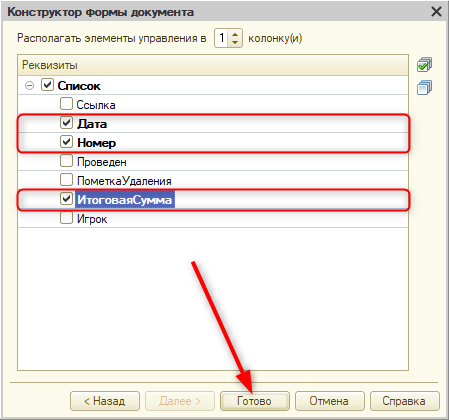
Рис. 17.36. Определение структуры списка
Для данных, которые будут отображаться на этой форме, необходимо установить отбор по текущему игроку.
Данные формируются в разделе "Реквизиты", поэтому работать нужно с реквизитом "Список".
Откроем палитру свойств реквизита "Игрок" и на вкладке "Объект" установим галочку напротив свойства "Произвольный запрос". Далее нажмем на кнопку "Открыть" (рис. 17.37).
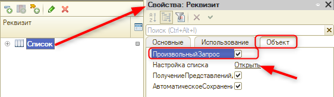
Рис. 17.37. Переход к настройке списка
Нужно реализовать следующую настройку: если список просматривает Администратор, то нужно отображать все записи, а если игрок, – то только те, которые были созданы им.
Чтобы сделать такую настройку, перейдем в конструктор запроса (рис. 17.38).
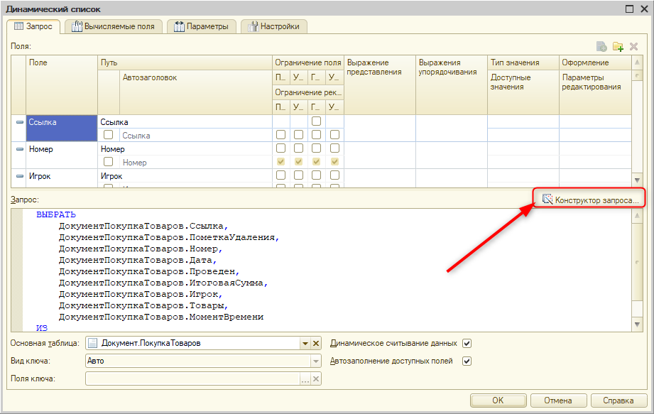
Рис. 17.38. Переход в конструктор запроса
В конструкторе запроса перейдем в раздел "Компоновка данных", далее – на вкладку "Условия". Данный раздел позволяет сделать необязательные условия: если данные заполнены, то отбор будет работать, в противном случае отбор не сработает.
Отбор будет выполняться по полю "Игрок". После добавления поля нажмем по нему правой кнопкой мыши и в списке выберем "Изменить" (рис. 17.39).
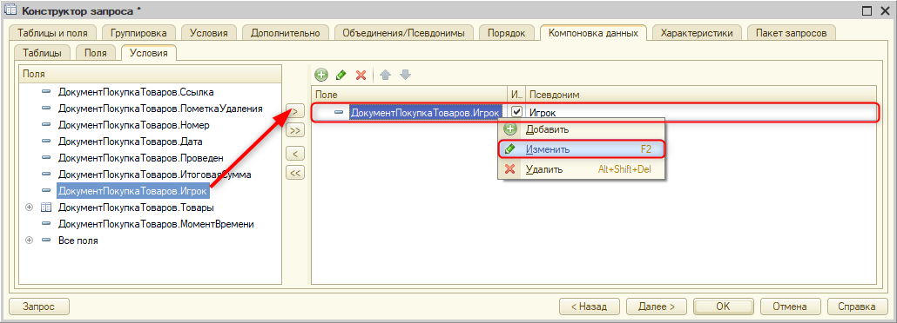
Рис. 17.39. Добавление условия отбора
В открывшемся окне укажем, что поле "Игрок" должно быть равно переменному значению.
Чтобы обозначить динамическое значение, то есть параметр, необходимо указать амперсант (&) перед названием этого параметра (рис. 17.40).
Рис. 17.40. Настройка параметра отбора
В результате будет получен запрос, в котором ветка "Условие" заключена в фигурные скобки. Это означает, что данный параметр не обязателен к заполнению (рис. 17.41).
Рис. 17.41. Итоговый вариант запроса
Но на этом настройка формы списка еще не окончена. Параметр "Игрок" необходимо заполнять. Заполнение должно происходить на стороне сервера, чтобы была возможность анализировать информацию о том, какой игрок запустил систему для генерации соответствующей формы.
Для реализации заполнения параметра подойдет обработчик события формы "ПриСозданииНасервере" (рис. 17.42).
Рис. 17.42. Добавление обработчика "ПриСозданииНаСервере"
В этом обработчике нужно определить следующую логику: если игру запустил не Администратор, тогда необходимо заполнить параметр "Игрок".
Скопируем на будущее получившийся обработчик.
Обновим конфигурацию базы данных и запустим пользовательский режим под созданным ранее игроком.
Если нажать на кнопку "Покупка товаров", то список будет пустым, так как данный игрок еще ничего не покупал (рис. 17.43).
Рис. 17.43. Список покупок товара
Закроем пользовательский режим и вернемся в конфигуратор.
Аналогичную настройку необходимо сделать для списка заказов и текущих задач.
Перейдем к списку заказов. В окне редактирования на вкладке "Формы" создадим форму списка (рис. 17.44).
Рис. 17.44. Добавление формы списка
Перейдем на вторую вкладку конструктора формы и определим структуру списка. Он должен содержать в себе поля "Дата", "Номер", "Товар", "Цена", "Количество" и "Итоговая сумма" (рис. 17.45).
Рис. 17.45. Настройка структуры списка
В открывшемся редакторе форм подставим фрагмент программного кода из модуля формы списка документа "Покупка товаров", который мы скопировали ранее.
После добавления программного кода необходимо связать данный обработчик с событием формы (рис. 17.46).
Рис. 17.46. Привязка обработчика к событию
Далее необходимо указать, что список заказов должен формироваться для каждого игрока свой. Отроем палитру свойств реквизита "Список", установим галочку напротив свойства "ПроизвольныйЗапрос" и нажмем на кнопку "Открыть" (рис. 17.47).
Рис. 17.47. Переход к настройке списка
Переходим в конструктор запроса и на вкладке "Условия" в разделе "Компоновка данных" указываем, что отбор будет осуществляться по полю "Игрок" (рис. 17.48).
Рис. 17.4. Настройка параметра отбора
Благодаря тому, что параметр отбора на форме списка заказов называется так же, как и на форме списка покупок товаров, перенесенный программный код отработает корректно.
Последнее, что осталось настроить, – это форма списка задач. Перейдем в окно редактирования задачи "Этапы заказов" на вкладку "Формы" и добавим новую форму списка задач (рис. 17.49).
Рис. 17.49. Добавление формы списка бизнес-процесса
Поскольку у механизма задачи уже есть адресация, то можно сразу обратиться к свойствам реквизита "Список" и на вкладке "Объект" указать в качестве основной таблицы "ЭтапыЗаказа.ЗадачиПоИсполнителю" (рис. 17.50).
Рис. 17.50. Настройка списка "Этапов заказа"
Обновим конфигурацию базы данных и запустим пользовательский режим под ранее созданным игроком.
Если сейчас нажать на кнопку "Список заказов", то откроется форма списка бизнес-процессов (рис. 17.51).
Рис. 17.51. Список бизнес-процессов "Заказ"
Лучше всего по данной команде выводить пользователю список документов с заказами от клиентов.
Закроем пользовательский режим и вернемся в конфигуратор.
Откроем общую форму "Начальная страница" и обратимся к разделу "Команды", "Глобальные команды" (рис. 17.52).
Рис. 17.52. Раздел "Глобальные команды"
Теперь в глобальных командах появился раздел "Для администратора". Если его развернуть, то появится список с пунктами "Обычное", "Создать", "Отчеты" и "Сервис", содержимое которого мы видели ранее.
На форму необходимо вынести команду для перехода к списку документов "Заказ клиента" и удалить команду "БизнесПроцессЗаказОткрытьСписок" (рис. 17.53).
Рис. 17.53. Изменения в группе "ДанныеЗаказов"
Для новой команды необходимо указать заголовок "Заказы клиентов" (рис. 17.54).
Рис. 17.54. Изменение заголовка команды
Обновим конфигурацию базы данных и запустим пользовательский режим.
Теперь, если открыть список заказов клиентов, текущих задач или покупок товаров, то все они будут пустыми, так как текущий игрок еще ничего не покупал и пока что не выполнил ни одного заказа (рис. 17.55).
Рис. 17.55. Пустой список заказов
Попробуем открыть магазин (рис. 17.56).
Рис. 17.56. Поступление нового заказа
В результате в списке появился новый заказ от клиента. На данный момент его нельзя выполнить, так как у игрока не хватает товаров в наличии. Если проверить список документов "Заказы клиентов", то он будет пуст, так как заказ не был выполнен (рис. 17.57).
Рис. 17.57. Пустой список заказов после появления задачи
Закроем пользовательский режим и вернемся в конфигуратор.
Осталось сделать последнюю маленькую настройку, а именно убрать вывод интервала между заказами.
В модуле общей формы "Начальная страница" уберем строку, которая выводит сообщение с интервалом.
Обновим конфигурацию базы данных и запустим пользовательский режим под администратором.
В пользовательском режиме отображаются список апгрейдов, баланс и рейтинг игрока Администратор. Список заказов пуст, так во всех заказах, которые создавались ранее, не был указан исполнитель, то есть они были обезличены (рис. 17.58).
Рис. 17.58. Начальная страница Администратора
Весь желаемый функционал реализован! Доработать систему можно различными способами, но главная задача на текущий момент выполнена.
В рамках этого модуля была создана игра, к которой могут подключаться разные игроки. Для каждого игрока отображается только его информация.
Если сейчас попробовать построить отчет по рейтингу игроков, то в списке будет только Администратор, потому что другие игроки еще не приступили к развитию своих магазинов.
Перезапустим пользовательский режим и авторизуемся в системе под своим игроком (рис. 17.59).
Рис. 17.59. Авторизация под своим пользователем
Купим для этого игрока апгрейд с минимальным порогом рейтинга для приобретения, например, "Один кассир" (рис. 17.60).
Рис. 17.60. Покупка апгрейда "Один кассир"
После покупки на начальном экране отобразится рейтинг текущего игрока – 5. Повторно сформируем отчет по рейтингу. Теперь в списке два игрока (рис. 17.61).
Рис. 17.61. Отчет по рейтингу игроков
Попробуем закупить товарные позиции для текущего игрока (рис. 17.62).
Рис. 17.62. Покупка товаров для текущего игрока
На начальном экране по кнопке "Отчет по остаткам товаров" можно посмотреть, сколько товаров есть у каждого игрока на складе (рис. 17.63). Если сформировать отчет по финансам, то там также отобразится информация по обоим игрокам (рис. 17.64).
Рис. 17.63. Отчет по остаткам товаров |
Рис. 17.64. Отчет по финансам |
Чем больше будет идти учет в созданной игре и чем больше будет игроков, тем больше они будут продавать и покупать товары и тем быстрее увеличат свой рейтинг. Можно устраивать состязания и подводить итоги по отчетам.
На этом прохождение второго модуля завершено!
В рамках этого модуля мы рассмотрели не только программирование, но и конфигурирование. Создали множество объектов, поработали с формами и даже взаимодействовали с программой с точки зрения администратора.
Это нужно запомнить |
|
В системе не может быть пользователей с двумя одинаковыми именами. |
Доработайте форму начального экрана под концепцию своего магазина. Например, можно вынести на начальный экран дополнительную информацию в пункт управления или новые команды для быстрого перехода к нужным игроку объектам.